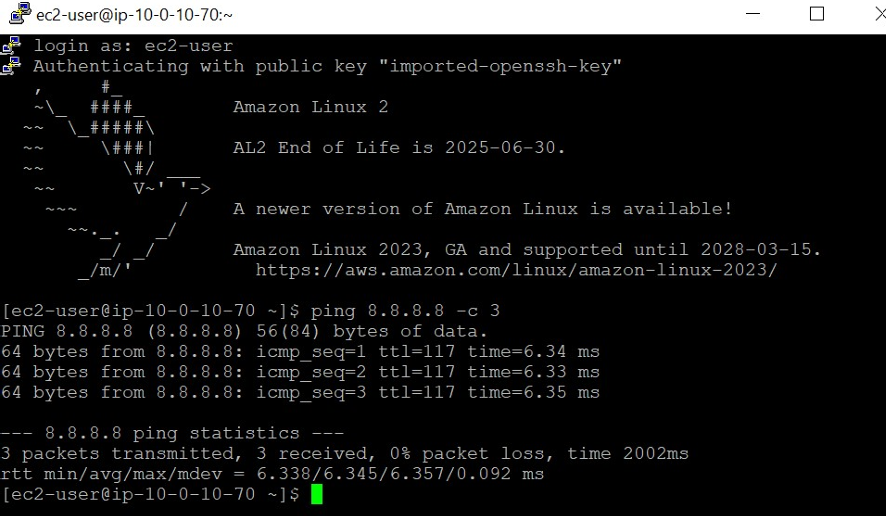
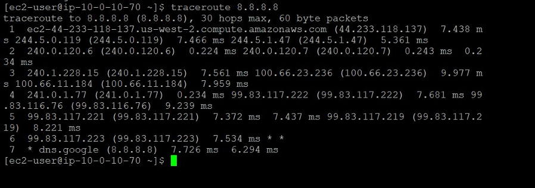
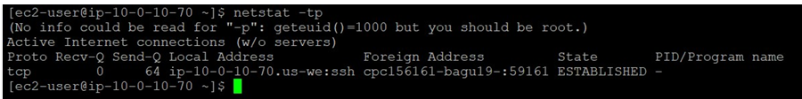
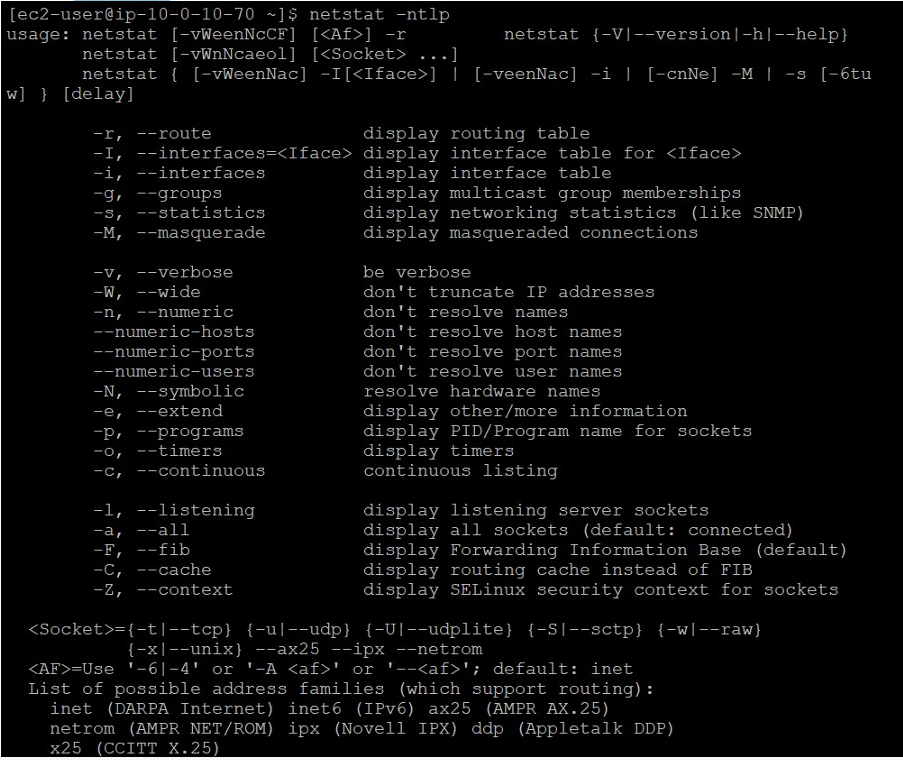

Shahzad Aslam GitHub: saslam-stack (github.com)
AWS Certified Solution Architect Associate Email: saslam79@hotmail.co.uk AWS Certified Cloud Practitioner linkedin.com/in/shahzad-aslam-556719190 HTML, CSS and JavaScript web development
Internet Protocol Troubleshooting Commands
You need to SSH into AWS Linux EC2 instance (You can read this article How to SSH into AWS EC2 instance to SSH into AWS Linux EC2 instance.)
Some layers have commands related to them to help with troubleshooting.
The following is an example of how the troubleshooting commands flow with
the Open Systems Interconnection (OSI) model:
Layer 3 (network): The ping and traceroute commands
Ping command
If you have launched an EC2 instance. To test connectivity to and from it,
run the ping command. You can use this command to test connectivity and
ensure that it allows Internet Control Message Protocol (ICMP) requests on
the security level, such as security groups and network ACLs. In the Linux
terminal, run this command, and press Enter: ping 8.8.8.8 -c 3. This is
the ping command. When you run this command, you can input an IP or URL
followed by options. In this example, the -c stands for count, and 3
stands for how many requests you are requesting. The most common reason is
to test connectivity to something such as a server. The ping command sends
ICMP echo requests from your machine to the server that you are trying to
reach (for example, amazon.com). The server sends an echo reply with a
round-trip time. You use the ping command mostly to troubleshoot
connectivity issues and reachability to a specific target. You can also
use it to bring a specific network up if traffic needs to continuously
flow through a network. You can also send a continuous ping.

Traceroute command
If you are having latency issues, like connection is taking a long time,
and having packet loss. If you aren't sure if it is related to AWS or your
internet service provider (ISP). To investigate, you can run the
traceroute command from your AWS resource to the server that they are
trying to reach. If the loss happens toward the server, the issue is most
likely the ISP. If the loss is toward AWS, you might need to investigate
other factors that might limiting networking connectivity.
In the Linux terminal, run this command traceroute 8.8.8.8 and press
Enter. Packet loss, seen as percentages, can occur at each hop, and this
loss usually occurs because of an issue with the user's local area network
(LAN) or ISP.

You can pinpoint an issue or error when the hostnames and IP addresses on
either side of a jump have failed. Three asterisks (***) indicate a failed
hop.
The traceroute command reports on the path and latency that the packet
takes to get from your machine to the destination (8.8.8.8). Each server
is called a hop. There can be packet loss, seen as percentages, at each
loss, which is usually due to the user's local area network (LAN) or ISP;
however, if the packet loss occurs toward the end of the route, then the
issue is more than likely the server connection. You can pinpoint an issue
or error when hostnames and IP addresses on either side of a failed jump,
which looks like three asterisks (***).
Layer 4 (transport): The netstat and telnet commands
To check if one of the ports on a certain subnet is compromised, you run
the netstat command on a local host on that subnet to confirm if the port
is listening when it shouldn't be. In the Linux terminal, run the this
command, and press Enter: netstat –tp

The netstat command shows the current established TCP connections from
which the host is listening. When troubleshooting networking issues
starting with the host machine and working outward, you can run this
command to understand which ports are listening and which are not. Because
this command gives you a snapshot of your layer 4 connectivity, using this
command will help you save time when trying to narrow down a large
networking issue.
netstat –tp : Confirms established connections.
netstat –ntlp : Outputs listening services but does not resolve port
numbers.

Layer 7 (application): The curl command
If you have an Apache server running, and you want to test if you are
getting a successful request (200 OK), which indicates that your website
is running successfully. You run a curl request to see if your Apache
server returns a 200 OK
In Linux terminal enter curl -vLo /dev/null https://aws.com
-I: This option provides header information and specifies that the request
method is Head. -i: This option specifies that the request method is GET. -k: This option tells the command to ignore SSL errors. -v: This option is verbose. It shows what the computer is doing or what
the software is loading during startup. -o /dev/null: This option will send HTML and CSS in response to null.
You can use the curl command to transfer data between you and the server.
The curl command can use many different protocols, but the most common are
HTTP and HTTPS. You can use the curl command to troubleshoot communication
from your local device to a server.